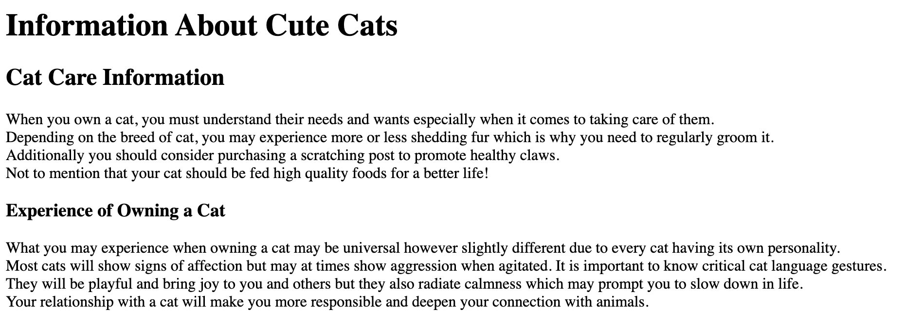
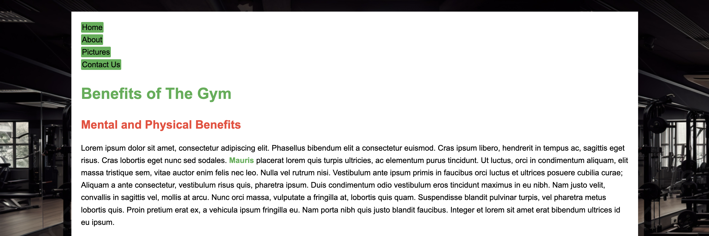
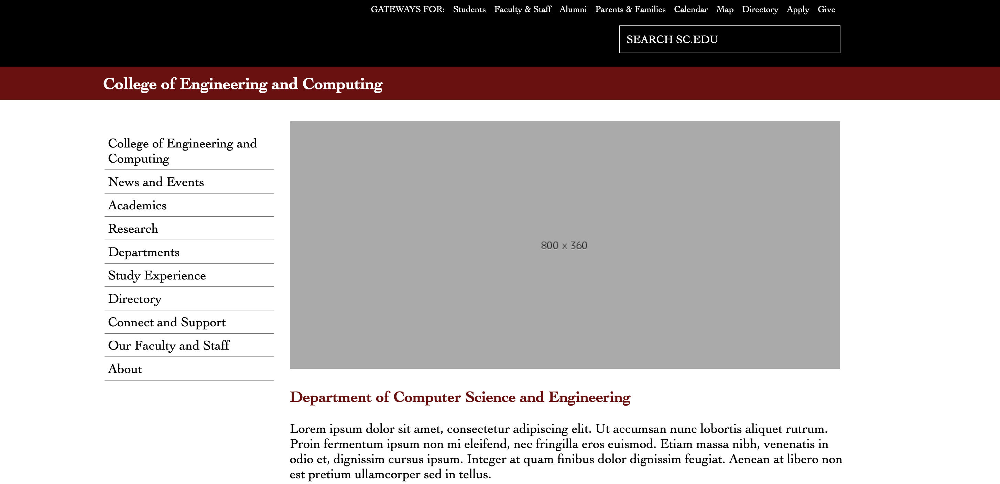
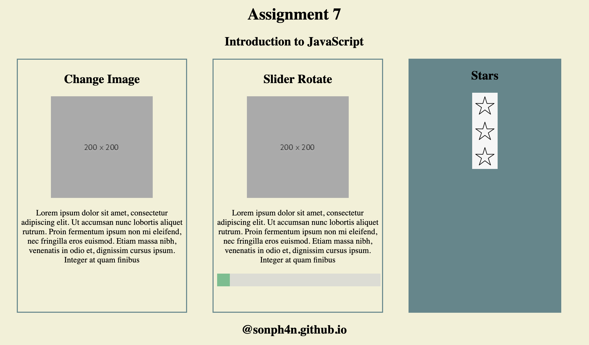
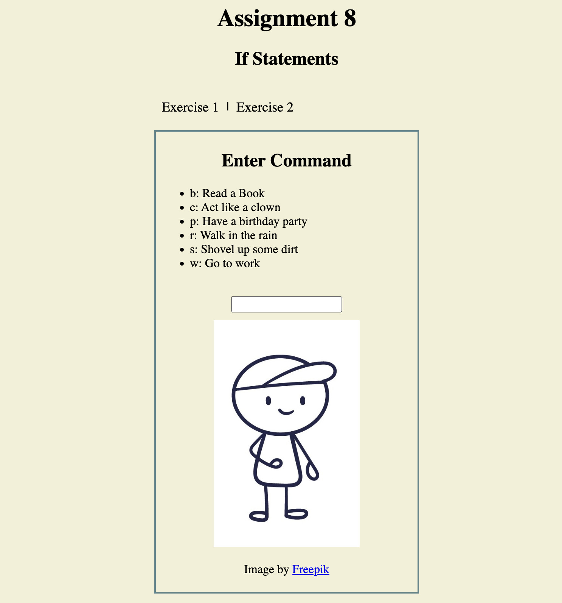
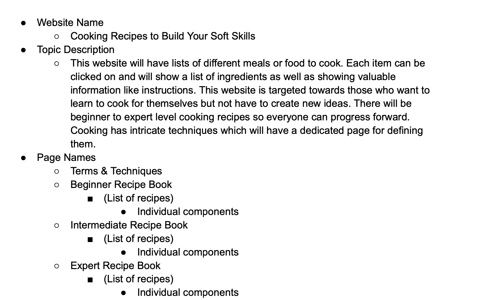
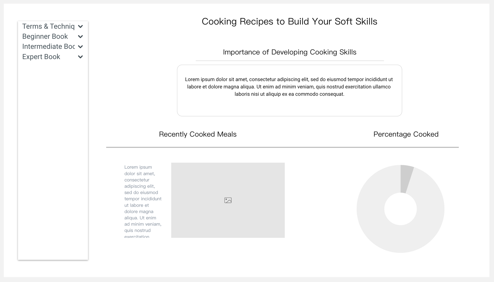
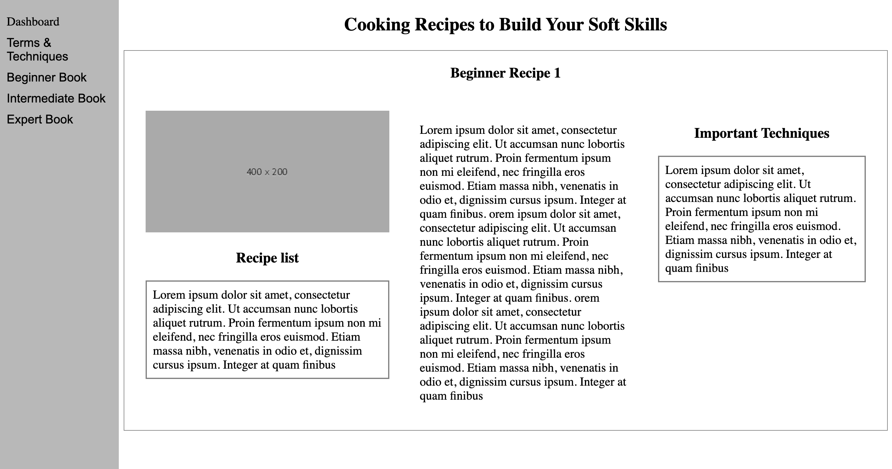
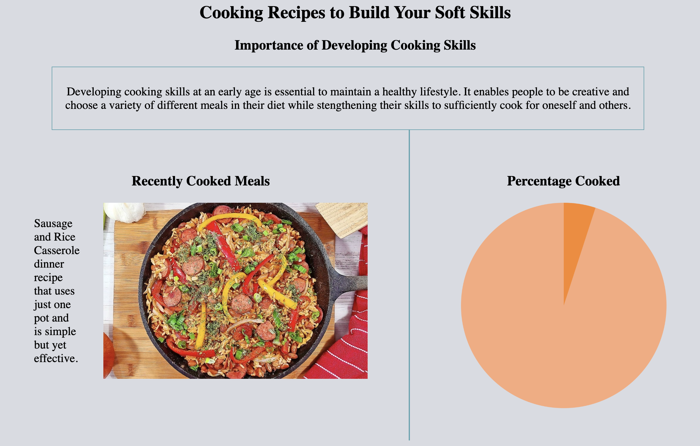

Assignment 1 - Basic HTML
This assignment showcases basic html skills such as linking to sites, adding images, tables, and bullets.
Assignment 2 - Basic CSS
This assignment builds upon assignment 1 which helps create a better understanding of adding details such as bigger font, colors, backgrounds, and more to enhance the look.
Assignment 3 - Page Layout

This assignment shows how to use flexboxes and media which flex and unflex when set at a desired pixel width.
Assignment 5 - Recreate CSS Page
This assignment demonstrates previous knowledge to recreate the usc department of engineering webpage layout.
Assignment 7 - Introduction to JavaScript
This assignment dives into the surface of javascript such as connecting elements to animations
Assignment 8 - Conditionals
This assignment shows how to use javascript conditonals if then statements
Projects
Topic PDF
The pdf document for the creation of my web page from start to finish. Includes Name, Data, Pages, etc.
Wireframe
Wireframe creation of my web page to showcase what the finished product would look like. However this may change due to being a prototype.
HTMl and CSS
In this project assignment, I set up the basis of my website with multiple pages and javascript.
Colors-Pictures-and Text
In this project assignment, I filled in the blanks and designed colors